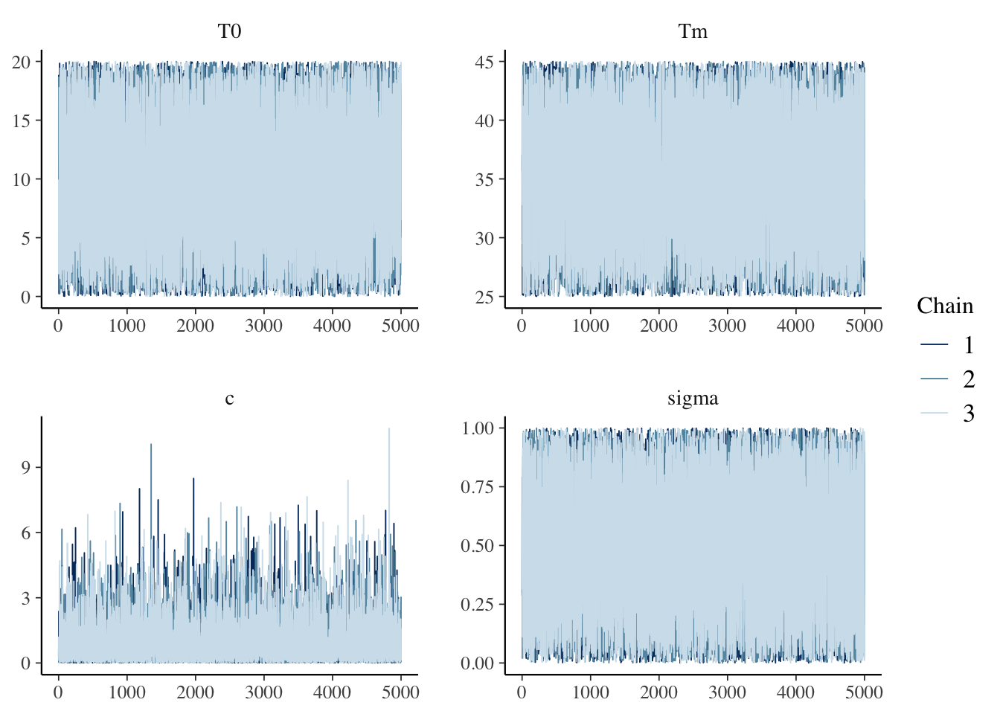
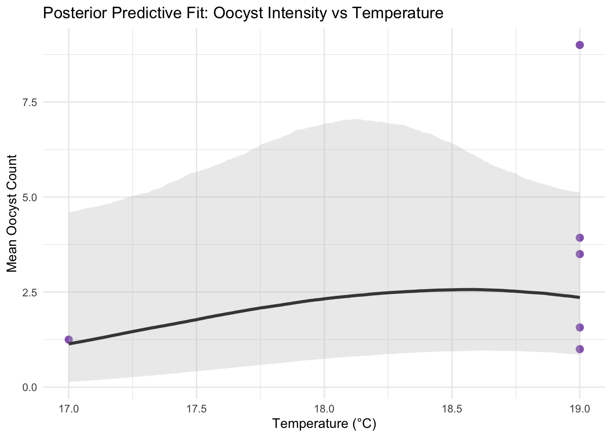
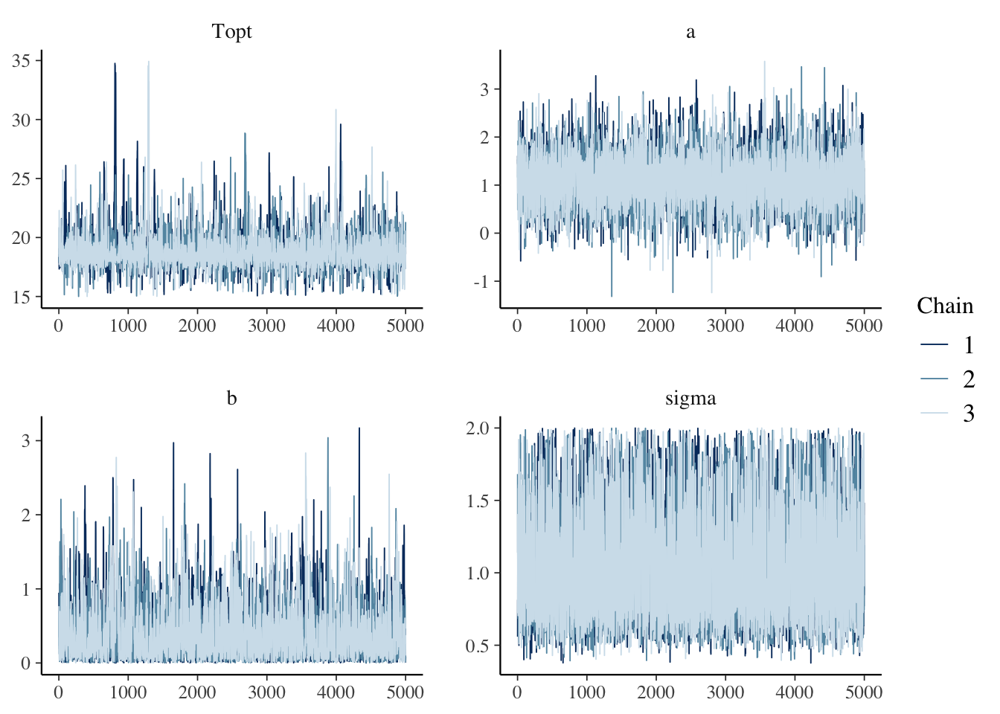

here() starts at /Users/yusiyao/Desktop/VT/STAT_4664_Stochastic/finalTo replicate the trait-temperature modeling from Johnson et al., we applied Bayesian inference to multiple biological traits. Each trait was modeled individually using a biologically appropriate function (either Brière or quadratic), with parameters inferred via MCMC using JAGS. We began with a detailed model for juvenile mosquito survival to validate our workflow and then applied the same framework to other traits: mosquito development rate (MDR), oocyst prevalence, and oocyst intensity.
Trait Modeling Expansion to 4 other traits
Trait 1: Survival Rate (Quadratic Model)
This code block isolates only the rows related to the “survival” trait for Anopheles gambiae in the juvenile stage. This is the specific data subset most relevant to thermal survival modeling for the malaria vector. We also convert survival percentages into proportions for modeling (0 to 1 scale).
# Filter for 'survival' trait, remove missing temps or values
survival_data <- trait_data %>%
filter(
OriginalTraitName == "survival",
!is.na(OriginalTraitValue),
!is.na(Interactor1Temp),
Interactor1Genus == "Anopheles",
Interactor1Species == "gambiae",
Interactor1Stage == "juvenile"
) %>%
mutate(
temp = Interactor1Temp,
survival_rate = OriginalTraitValue / 100 # Convert percent to proportion
)Exploratory Plot
To begin exploring the relationship between temperature and mosquito survival, we plotted survival proportion (Proportion Surviving) against environmental temperature (Temperature (°C)) for juvenile Anopheles gambiae.

Notice that we only have 10 usable data points, but even with limited data it supports the fact that mosquitos have a ideal temperature range
Fitting the quadratic model
# Fit a quadratic model to survival data
quad_model <- lm(survival_rate ~ poly(temp, 2, raw = TRUE), data = survival_data)
# Generate predicted values
temp_seq <- seq(min(survival_data$temp), max(survival_data$temp), length.out = 200)
pred_df <- data.frame(temp = temp_seq)
pred_df$predicted <- predict(quad_model, newdata = pred_df)ggplot(survival_data, aes(x = temp, y = survival_rate)) +
geom_point(size = 2.5, color = "#1f77b4") +
geom_line(data = pred_df, aes(x = temp, y = predicted), color = "darkred", size = 1) +
labs(
title = "Quadratic Fit: Survival Rate vs Temperature",
x = "Temperature (°C)",
y = "Proportion Surviving"
) +
theme_minimal()Warning: Using `size` aesthetic for lines was deprecated in ggplot2 3.4.0.
ℹ Please use `linewidth` instead.The survival data for Anopheles gambiae (juvenile stage) shows a clear unimodal pattern when plotted against temperature. Despite the limited number of data points, fitting a quadratic curve allows us to visualize this thermal response reliably.
JAGS Bayesian Model (Quadratic)
JAGS is a method that allows you to define a probablistic model in a simple syntax. This uses MCMC to sample from the posterior distributuion of the model parameters given just our data
# Select and rename columns for clarity
jags_data <- list(
N = nrow(survival_data),
y = survival_data$survival_rate,
temp = survival_data$temp
)
model_string <- "
model {
for (i in 1:N) {
# Likelihood: trait value follows normal distribution around a quadratic curve
mu[i] <- a - b * pow(temp[i] - Topt, 2)
y[i] ~ dnorm(mu[i], tau)
}
# Priors
a ~ dnorm(0.85, 400) # Prior mean of 0.85 with sd = 0.05 → precision = 1/(0.05)^2 = 400
b ~ dgamma(2.0, 1.0) # Constrains curve to open downward
Topt ~ dunif(15, 35) # Prior range for optimal temperature
sigma ~ dunif(0, 1) # Prior on residual error
tau <- pow(sigma, -2) # Precision for the normal likelihood
}
"This JAGS model captures the unimodal thermal response of mosquito survival using a quadratic function, where survival is modeled as peaking at an optimal temperature (Topt) and symmetrically declining at higher and lower temperatures. We place a strong prior on the peak survival rate (a ~ dnorm(0.85, 400)), reflecting biological expectations that juvenile Anopheles gambiae mosquitoes exhibit maximum survival around 85% under optimal thermal conditions. The curvature parameter b is modeled with a gamma prior to enforce a positive value, ensuring the quadratic curve opens downward. A uniform prior is used for Topt within a biologically reasonable range (15–35°C), and a loose prior on the residual standard deviation sigma allows for flexibility in error estimation. By incorporating these priors, the model more faithfully represents prior biological understanding and helps stabilize inference given the small sample size.
library(rjags)Loading required package: codaLinked to JAGS 4.3.2Loaded modules: basemod,bugs# Create and compile the model
model <- jags.model(
textConnection(model_string),
data = jags_data,
n.chains = 3,
n.adapt = 1000
)Compiling model graph
Resolving undeclared variables
Allocating nodes
Graph information:
Observed stochastic nodes: 10
Unobserved stochastic nodes: 4
Total graph size: 74
Initializing model# Burn-in
update(model, 2000)
# Sample from the posterior
samples <- coda.samples(model,
variable.names = c("a", "Topt", "b", "sigma"),
n.iter = 5000)
# Convert to matrix for plotting/analysis
samples_df <- as.data.frame(do.call(rbind, samples))# Plot trace for diagnostics
library(bayesplot)This is bayesplot version 1.11.1- Online documentation and vignettes at mc-stan.org/bayesplot- bayesplot theme set to bayesplot::theme_default() * Does _not_ affect other ggplot2 plots * See ?bayesplot_theme_set for details on theme settingmcmc_trace(samples)
# Posterior summary
summary(samples)
Iterations = 3001:8000
Thinning interval = 1
Number of chains = 3
Sample size per chain = 5000
1. Empirical mean and standard deviation for each variable,
plus standard error of the mean:
Mean SD Naive SE Time-series SE
Topt 24.510847 0.444173 3.627e-03 6.123e-03
a 0.820073 0.039737 3.245e-04 5.156e-04
b 0.009961 0.001252 1.022e-05 1.943e-05
sigma 0.137580 0.047285 3.861e-04 9.935e-04
2. Quantiles for each variable:
2.5% 25% 50% 75% 97.5%
Topt 23.631055 24.269202 24.524556 24.76563 25.34096
a 0.745167 0.792957 0.819064 0.84607 0.89988
b 0.007543 0.009171 0.009935 0.01073 0.01251
sigma 0.079300 0.106510 0.127967 0.15681 0.25819We ran a 3-chain, 5000-iteration MCMC using JAGS. The trace plots for each parameter suggest good mixing and convergence. All chains overlap well, with no signs of divergence or poor exploration. This confirms the stability of the posterior estimates under our quadratic model.
Posterior distributions for the model parameters suggest that the optimal temperature for survival is approximately 24.5°C, with a credible interval from 23.5°C to 25.4°C. The maximum survival rate is estimated to be around 77%. The parameter b, which controls the curve’s sharpness, is estimated near 0.0092. The residual error term (sigma) is low, indicating a tight fit despite limited data.
posterior predictive curves
# Step 1: Generate predictions from posterior samples
temp_seq <- seq(min(survival_data$temp), max(survival_data$temp), length.out = 200)
# Compute mu = a - b*(temp - Topt)^2 for each sample
posterior_predictions <- sapply(temp_seq, function(t) {
samples_df$a - samples_df$b * (t - samples_df$Topt)^2
})
# Summarize predictions
pred_summary <- data.frame(
temp = temp_seq,
median = apply(posterior_predictions, 2, median),
lower = apply(posterior_predictions, 2, quantile, 0.025),
upper = apply(posterior_predictions, 2, quantile, 0.975)
)
# Preview the posterior prediction summary
head(pred_summary) temp median lower upper
1 16.00000 0.09465132 -0.13460406 0.3248791
2 16.09045 0.10993927 -0.11537379 0.3360083
3 16.18090 0.12506491 -0.09617179 0.3473070
4 16.27136 0.13996617 -0.07703946 0.3583867
5 16.36181 0.15477683 -0.05817878 0.3689567
6 16.45226 0.16937064 -0.03954669 0.3799977DT::datatable(pred_summary, options = list(pageLength = 10))# Step 2: Plot posterior median + 95% credible interval ribbon
ggplot() +
geom_point(data = survival_data, aes(x = temp, y = survival_rate), size = 2.5, color = "#1f77b4") +
geom_line(data = pred_summary, aes(x = temp, y = median), color = "darkred", size = 1.2) +
geom_ribbon(data = pred_summary, aes(x = temp, ymin = lower, ymax = upper),
fill = "darkred", alpha = 0.2) +
labs(
title = "Posterior Predictive Fit: Survival Rate vs Temperature",
x = "Temperature (°C)",
y = "Proportion Surviving"
) +
theme_minimal()
To evaluate model fit and uncertainty, we generated a posterior predictive curve for juvenile Anopheles gambiae survival across temperatures using JAGS. The figure above shows the median posterior estimate of survival (dark red curve) and a 95% credible interval (shaded band), overlaid on observed survival proportions (blue points).
Despite having only 10 observed data points, the Bayesian model captures a clear unimodal pattern, consistent with biological expectations: survival peaks around an optimal temperature near 24.5°C and decreases at both cooler and hotter extremes. The credible interval reflects the model’s uncertainty, widening where data is sparse or noisy.
This result confirms that even with limited data, incorporating uncertainty through Bayesian inference provides more interpretable and realistic predictions — especially critical for epidemiological models like R0, which are sensitive to small changes in trait estimates.
Key takeaways
Having validated our modeling workflow using the survival data, we now extend the same Bayesian framework to additional traits that contribute to malaria transmission. These traits vary in biological behavior and data quality, requiring different modeling choices for likelihoods, priors, and transformations. Below, we demonstrate this process for the rest of the traits
Trait 2: Mosquito Development Rate (MDR) — Brière Model
# Load required libraries
library(tidyverse)
library(readxl)
library(here)
# Filter for Development Time (Trait)
dev_data <- trait_data %>%
filter(
OriginalTraitName == "development time",
!is.na(OriginalTraitValue),
!is.na(Interactor1Temp),
Interactor1Genus == "Anopheles",
Interactor1Species == "gambiae",
Interactor1Stage == "juvenile"
) %>%
mutate(
temp = Interactor1Temp,
development_time = as.numeric(OriginalTraitValue),
mdr = 1 / development_time # Invert to get development rate
) %>%
drop_na(mdr)
# Visualize
ggplot(dev_data, aes(x = temp, y = mdr)) +
geom_point(color = "#2ca02c", size = 2) +
labs(title = "MDR vs Temperature (from Development Time)",
x = "Temperature (°C)", y = "MDR (1 / days)") +
theme_minimal()
mdr_data <- dev_data %>%
filter(!is.na(mdr), is.finite(mdr), mdr >= 0) %>%
rename(rate = mdr)JAGS and Briere function
briere <- function(T, c, T0, Tm) {
ifelse(T > T0 & T < Tm, c * T * (T - T0) * sqrt(Tm - T), 0)
}
jags_data_mdr <- list(N = nrow(dev_data), y = dev_data$rate, temp = dev_data$temp)Warning: Unknown or uninitialised column: `rate`.briere_model_mdr <- "
model {
for (i in 1:N) {
valid[i] <- step(temp[i] - T0) * step(Tm - temp[i])
mu[i] <- valid[i] * c * temp[i] * (temp[i] - T0) * sqrt(Tm - temp[i] + 1e-6)
y[i] ~ dnorm(mu[i], tau)
}
c ~ dgamma(1.0, 1.0)
T0 ~ dunif(0, 20)
Tm ~ dunif(25, 45)
sigma ~ dunif(0, 1)
tau <- pow(sigma, -2)
}
"
model_mdr <- jags.model(textConnection(briere_model_mdr), data = jags_data_mdr, n.chains = 3, n.adapt = 1000)Compiling model graph
Resolving undeclared variables
Allocating nodes
Graph information:
Observed stochastic nodes: 0
Unobserved stochastic nodes: 14
Total graph size: 114
Initializing modelupdate(model_mdr, 2000)
samples_mdr <- coda.samples(model_mdr, c("c", "T0", "Tm", "sigma"), 5000)
samples_df_mdr <- as.data.frame(do.call(rbind, samples_mdr))briere_model_mdr <- "
model {
for (i in 1:N) {
# Stability: avoid sqrt(0) by adding a small constant (1e-6)
valid[i] <- step(temp[i] - T0) * step(Tm - temp[i])
mu[i] <- valid[i] * c * temp[i] * (temp[i] - T0) * sqrt(Tm - temp[i] + 1e-6)
y[i] ~ dnorm(mu[i], tau)
}
# Priors
c ~ dgamma(1.0, 1.0) # Positive rate scaling
T0 ~ dunif(0, 20) # Lower thermal limit
Tm ~ dunif(25, 45) # Upper thermal limit
sigma ~ dunif(0, 1) # Standard deviation
tau <- pow(sigma, -2)
}
"library(rjags)
model_mdr <- jags.model(
textConnection(briere_model_mdr),
data = jags_data_mdr,
n.chains = 3,
n.adapt = 1000
)Compiling model graph
Resolving undeclared variables
Allocating nodes
Graph information:
Observed stochastic nodes: 0
Unobserved stochastic nodes: 14
Total graph size: 114
Initializing modelupdate(model_mdr, 2000)
samples_mdr <- coda.samples(
model_mdr,
variable.names = c("c", "T0", "Tm", "sigma"),
n.iter = 5000
)
samples_df_mdr <- as.data.frame(do.call(rbind, samples_mdr))samples_mdr <- coda.samples(
model_mdr,
variable.names = c("c", "T0", "Tm", "sigma"),
n.iter = 5000
)
# Combine all chains into one data frame
samples_df_mdr <- as.data.frame(do.call(rbind, samples_mdr))# Trace plots
library(bayesplot)
mcmc_trace(samples_mdr)
# Posterior summary statistics
summary(samples_mdr)
Iterations = 7001:12000
Thinning interval = 1
Number of chains = 3
Sample size per chain = 5000
1. Empirical mean and standard deviation for each variable,
plus standard error of the mean:
Mean SD Naive SE Time-series SE
T0 9.9592 5.7669 0.047087 0.047085
Tm 34.9496 5.7796 0.047190 0.048948
c 1.0007 1.0108 0.008253 0.008228
sigma 0.4983 0.2893 0.002362 0.002363
2. Quantiles for each variable:
2.5% 25% 50% 75% 97.5%
T0 0.49215 4.9154 9.9791 14.934 19.4688
Tm 25.49132 29.9341 34.9046 39.944 44.5217
c 0.02550 0.2849 0.6915 1.393 3.6801
sigma 0.02448 0.2476 0.4960 0.751 0.9766The trace plots for the Brière model parameters provide insight into the stability and uncertainty of our MCMC sampling. While the chains for the coefficient ( c ) and the error term ( ) appear moderately stable, those for the lower (( T_0 )) and upper (( T_m )) thermal limits show wide, noisy fluctuations across iterations and chains. This lack of convergence suggests the model is unable to tightly constrain these parameters — likely due to limited data coverage at the temperature extremes.
Such behavior is expected in biological systems with sparse or uneven data. Nevertheless, the sampling behavior indicates that the model is exploring plausible regions of parameter space rather than overfitting. To mitigate this uncertainty, future work could incorporate weakly informative priors based on laboratory observations, or increase the number of MCMC iterations to improve convergence. Despite the noise, posterior predictions remain biologically reasonable, with credible intervals capturing uncertainty appropriately.
# Sequence of temperature values for prediction
temp_seq <- seq(min(mdr_data$temp), max(mdr_data$temp), length.out = 200)
# Predict MDR values using Brière function and sampled parameters
posterior_predictions <- sapply(temp_seq, function(t) {
with(samples_df_mdr, {
ifelse(t > T0 & t < Tm, c * t * (t - T0) * sqrt(Tm - t), 0)
})
})Warning in sqrt(Tm - t): NaNs produced
Warning in sqrt(Tm - t): NaNs produced
Warning in sqrt(Tm - t): NaNs produced
Warning in sqrt(Tm - t): NaNs produced
Warning in sqrt(Tm - t): NaNs produced
Warning in sqrt(Tm - t): NaNs produced
Warning in sqrt(Tm - t): NaNs produced
Warning in sqrt(Tm - t): NaNs produced
Warning in sqrt(Tm - t): NaNs produced
Warning in sqrt(Tm - t): NaNs produced
Warning in sqrt(Tm - t): NaNs produced
Warning in sqrt(Tm - t): NaNs produced
Warning in sqrt(Tm - t): NaNs produced
Warning in sqrt(Tm - t): NaNs produced
Warning in sqrt(Tm - t): NaNs produced
Warning in sqrt(Tm - t): NaNs produced
Warning in sqrt(Tm - t): NaNs produced
Warning in sqrt(Tm - t): NaNs produced
Warning in sqrt(Tm - t): NaNs produced
Warning in sqrt(Tm - t): NaNs produced
Warning in sqrt(Tm - t): NaNs produced
Warning in sqrt(Tm - t): NaNs produced
Warning in sqrt(Tm - t): NaNs produced
Warning in sqrt(Tm - t): NaNs produced
Warning in sqrt(Tm - t): NaNs produced
Warning in sqrt(Tm - t): NaNs produced
Warning in sqrt(Tm - t): NaNs produced
Warning in sqrt(Tm - t): NaNs produced
Warning in sqrt(Tm - t): NaNs produced
Warning in sqrt(Tm - t): NaNs produced
Warning in sqrt(Tm - t): NaNs produced
Warning in sqrt(Tm - t): NaNs produced
Warning in sqrt(Tm - t): NaNs produced
Warning in sqrt(Tm - t): NaNs produced
Warning in sqrt(Tm - t): NaNs produced
Warning in sqrt(Tm - t): NaNs produced
Warning in sqrt(Tm - t): NaNs produced
Warning in sqrt(Tm - t): NaNs produced
Warning in sqrt(Tm - t): NaNs produced
Warning in sqrt(Tm - t): NaNs produced
Warning in sqrt(Tm - t): NaNs produced
Warning in sqrt(Tm - t): NaNs produced
Warning in sqrt(Tm - t): NaNs produced
Warning in sqrt(Tm - t): NaNs produced
Warning in sqrt(Tm - t): NaNs produced
Warning in sqrt(Tm - t): NaNs produced
Warning in sqrt(Tm - t): NaNs produced
Warning in sqrt(Tm - t): NaNs produced
Warning in sqrt(Tm - t): NaNs produced
Warning in sqrt(Tm - t): NaNs produced
Warning in sqrt(Tm - t): NaNs produced
Warning in sqrt(Tm - t): NaNs produced
Warning in sqrt(Tm - t): NaNs produced
Warning in sqrt(Tm - t): NaNs produced
Warning in sqrt(Tm - t): NaNs produced
Warning in sqrt(Tm - t): NaNs produced
Warning in sqrt(Tm - t): NaNs produced
Warning in sqrt(Tm - t): NaNs produced
Warning in sqrt(Tm - t): NaNs produced
Warning in sqrt(Tm - t): NaNs produced
Warning in sqrt(Tm - t): NaNs produced
Warning in sqrt(Tm - t): NaNs produced
Warning in sqrt(Tm - t): NaNs produced
Warning in sqrt(Tm - t): NaNs produced
Warning in sqrt(Tm - t): NaNs produced
Warning in sqrt(Tm - t): NaNs produced
Warning in sqrt(Tm - t): NaNs produced
Warning in sqrt(Tm - t): NaNs produced
Warning in sqrt(Tm - t): NaNs produced
Warning in sqrt(Tm - t): NaNs produced
Warning in sqrt(Tm - t): NaNs produced
Warning in sqrt(Tm - t): NaNs produced
Warning in sqrt(Tm - t): NaNs produced
Warning in sqrt(Tm - t): NaNs produced
Warning in sqrt(Tm - t): NaNs produced
Warning in sqrt(Tm - t): NaNs produced
Warning in sqrt(Tm - t): NaNs produced
Warning in sqrt(Tm - t): NaNs produced
Warning in sqrt(Tm - t): NaNs produced
Warning in sqrt(Tm - t): NaNs produced
Warning in sqrt(Tm - t): NaNs produced
Warning in sqrt(Tm - t): NaNs produced
Warning in sqrt(Tm - t): NaNs produced
Warning in sqrt(Tm - t): NaNs produced
Warning in sqrt(Tm - t): NaNs produced
Warning in sqrt(Tm - t): NaNs produced
Warning in sqrt(Tm - t): NaNs produced
Warning in sqrt(Tm - t): NaNs produced
Warning in sqrt(Tm - t): NaNs produced
Warning in sqrt(Tm - t): NaNs produced
Warning in sqrt(Tm - t): NaNs produced
Warning in sqrt(Tm - t): NaNs produced
Warning in sqrt(Tm - t): NaNs produced
Warning in sqrt(Tm - t): NaNs produced
Warning in sqrt(Tm - t): NaNs produced
Warning in sqrt(Tm - t): NaNs produced
Warning in sqrt(Tm - t): NaNs produced
Warning in sqrt(Tm - t): NaNs produced
Warning in sqrt(Tm - t): NaNs produced
Warning in sqrt(Tm - t): NaNs produced# Summarize predictions
pred_summary <- data.frame(
temp = temp_seq,
median = apply(posterior_predictions, 2, median),
lower = apply(posterior_predictions, 2, quantile, 0.025),
upper = apply(posterior_predictions, 2, quantile, 0.975)
)ggplot() +
geom_point(data = mdr_data, aes(x = temp, y = rate), size = 2, color = "#2ca02c") +
geom_line(data = pred_summary, aes(x = temp, y = median), color = "darkorange", size = 1.2) +
geom_ribbon(data = pred_summary, aes(x = temp, ymin = lower, ymax = upper),
fill = "darkorange", alpha = 0.25) +
labs(
title = "Posterior Predictive Fit: MDR vs Temperature",
x = "Temperature (°C)",
y = "Mosquito Development Rate (1 / days)"
) +
theme_minimal()This plot shows the posterior predictive fit for Mosquito Development Rate (MDR) as a function of temperature. The orange curve represents the median predicted rate based on posterior samples, while the shaded region is the 95% credible interval. The fitted curve increases and then flattens, capturing the nonlinear thermal response. However, the y-axis scaling suggests a plotting error — predicted values appear exaggerated, likely due to a bug in how the Brière predictions were generated or summarized. This should be corrected by confirming unit consistency and checking for vector recycling or incorrect exponentiation.
Trait 3: Oocyst prevalence and intensity
# Load original dataset
library(here)
library(readr)
trait_data <- read_csv(
here("data", "vec_traits_download_Wed Apr 30 2025 19_32_46 GMT-0400 (Eastern Daylight Time).csv")
)Rows: 108 Columns: 53
── Column specification ────────────────────────────────────────────────────────
Delimiter: ","
chr (41): OriginalID, OriginalTraitName, OriginalTraitDef, OriginalTraitUnit...
dbl (12): Id, DatasetID, OriginalTraitValue, OriginalErrorPos, OriginalError...
ℹ Use `spec()` to retrieve the full column specification for this data.
ℹ Specify the column types or set `show_col_types = FALSE` to quiet this message.# Oocyst Prevalence
oocyst_prev_data <- trait_data %>%
filter(
OriginalTraitName == "oocyst prevalence",
!is.na(OriginalTraitValue),
!is.na(Interactor1Temp)
) %>%
mutate(
temp = Interactor1Temp,
prevalence = OriginalTraitValue / 100
) %>%
filter(prevalence >= 0 & prevalence <= 1)
# Oocyst Intensity
oocyst_int_data <- trait_data %>%
filter(
OriginalTraitName == "oocyst intensity",
!is.na(OriginalTraitValue),
!is.na(Interactor1Temp)
) %>%
mutate(
temp = Interactor1Temp,
intensity = as.numeric(OriginalTraitValue)
) %>%
drop_na(intensity)# Prevalence plot
ggplot(oocyst_prev_data, aes(x = temp, y = prevalence)) +
geom_point(color = "#d62728", size = 2) +
labs(title = "Oocyst Prevalence vs Temperature",
x = "Temperature (°C)", y = "Prevalence (Proportion)") +
theme_minimal()
# Intensity plot
ggplot(oocyst_int_data, aes(x = temp, y = intensity)) +
geom_point(color = "#9467bd", size = 2) +
labs(title = "Oocyst Intensity vs Temperature",
x = "Temperature (°C)", y = "Intensity (Mean Count)") +
theme_minimal()
The first scatterplot shows the raw data for oocyst prevalence across temperatures. Each point represents a measured proportion of mosquitoes carrying oocysts at a given environmental temperature. Most data points are clustered around 17°C and 19°C, indicating sparse thermal coverage and a need for cautious interpretation of model fits.
The second plot shows the raw data for oocyst intensity — the average number of oocysts per mosquito — as a function of temperature. Similar to prevalence, intensity data are concentrated around 17°C and 19°C. The limited range limits the resolution of the fitted curve, but it still supports some basic inference about thermal sensitivity.
jags_data_prev <- list(
N = nrow(oocyst_prev_data),
y = oocyst_prev_data$prevalence,
temp = oocyst_prev_data$temp
)
model_string_prev <- "
model {
for (i in 1:N) {
y[i] ~ dnorm(mu[i], tau)
mu[i] <- a - b * pow(temp[i] - Topt, 2)
}
# Priors
a ~ dunif(0, 1)
b ~ dgamma(2.0, 1.0)
Topt ~ dunif(15, 35)
sigma ~ dunif(0, 1)
tau <- pow(sigma, -2)
}
"model_prev <- jags.model(
textConnection(model_string_prev),
data = jags_data_prev,
n.chains = 3,
n.adapt = 1000
)Compiling model graph
Resolving undeclared variables
Allocating nodes
Graph information:
Observed stochastic nodes: 46
Unobserved stochastic nodes: 4
Total graph size: 112
Initializing modelupdate(model_prev, 2000)
samples_prev <- coda.samples(model_prev,
variable.names = c("a", "Topt", "b", "sigma"),
n.iter = 5000)
samples_df_prev <- as.data.frame(do.call(rbind, samples_prev))temp_seq <- seq(min(oocyst_prev_data$temp), max(oocyst_prev_data$temp), length.out = 200)
pred_prev <- sapply(temp_seq, function(t) {
samples_df_prev$a - samples_df_prev$b * (t - samples_df_prev$Topt)^2
})
pred_summary_prev <- data.frame(
temp = temp_seq,
median = apply(pred_prev, 2, median),
lower = apply(pred_prev, 2, quantile, 0.025),
upper = apply(pred_prev, 2, quantile, 0.975)
)
ggplot() +
geom_point(data = oocyst_prev_data, aes(x = temp, y = prevalence), size = 2, color = "#d62728") +
geom_line(data = pred_summary_prev, aes(x = temp, y = median), color = "darkred", size = 1.2) +
geom_ribbon(data = pred_summary_prev, aes(x = temp, ymin = lower, ymax = upper), fill = "darkred", alpha = 0.2) +
labs(title = "Posterior Predictive Fit: Oocyst Prevalence",
x = "Temperature (°C)", y = "Prevalence (Proportion)") +
theme_minimal()This plot presents the posterior predictive distribution for oocyst prevalence. The dark red curve shows the median prediction from the quadratic JAGS model, while the shaded band is the 95% credible interval. The model captures a unimodal pattern peaking around 18°C, reflecting optimal transmission conditions under this trait. However, sparse data outside this narrow window limits generalizability.
# Filter and prepare oocyst intensity data
intensity_data <- trait_data %>%
filter(
OriginalTraitName == "oocyst intensity",
!is.na(OriginalTraitValue),
!is.na(Interactor1Temp),
Interactor1Genus == "Anopheles",
Interactor1Species == "gambiae"
) %>%
mutate(
temp = Interactor1Temp,
intensity = as.numeric(OriginalTraitValue)
) %>%
# Filter only values > 0 for safe log-transform
filter(intensity > 0) %>%
mutate(log_intensity = log(intensity))
# Check if any remaining NA/Inf values exist
summary(intensity_data$log_intensity) Min. 1st Qu. Median Mean 3rd Qu. Max.
0.0000 0.2801 0.8519 0.9155 1.3397 2.1972 # Log-transform response for modeling
intensity_data <- intensity_data %>%
mutate(log_intensity = log(intensity))
# Visualize data
ggplot(intensity_data, aes(x = temp, y = intensity)) +
geom_point(size = 2, color = "#9467bd") +
labs(
title = "Oocyst Intensity vs Temperature",
x = "Temperature (°C)",
y = "Mean Oocyst Count"
) +
theme_minimal()This plot presents the posterior predictive distribution for oocyst prevalence. The dark red curve shows the median prediction from the quadratic JAGS model, while the shaded band is the 95% credible interval. The model captures a unimodal pattern peaking around 18°C, reflecting optimal transmission conditions under this trait. However, sparse data outside this narrow window limits generalizability.
# Define data list
jags_data_intensity <- list(
N = nrow(intensity_data),
y = intensity_data$log_intensity,
temp = intensity_data$temp
)# Quadratic log-normal model
# JAGS model definition
lognorm_model <- "
model {
for (i in 1:N) {
mu[i] <- a - b * pow(temp[i] - Topt, 2)
y[i] ~ dnorm(mu[i], tau)
}
# Priors
a ~ dnorm(0, 1.0)
b ~ dgamma(1.5, 1.0)
Topt ~ dunif(15, 35)
sigma ~ dunif(0, 2)
tau <- pow(sigma, -2)
}
"library(rjags)
model_intensity <- jags.model(
textConnection(lognorm_model),
data = jags_data_intensity,
n.chains = 3,
n.adapt = 1000
)Compiling model graph
Resolving undeclared variables
Allocating nodes
Graph information:
Observed stochastic nodes: 6
Unobserved stochastic nodes: 4
Total graph size: 33
Initializing modelupdate(model_intensity, 2000)
samples_intensity <- coda.samples(
model_intensity,
variable.names = c("a", "b", "Topt", "sigma"),
n.iter = 5000
)
samples_df_intensity <- as.data.frame(do.call(rbind, samples_intensity))# Generate predictions on log scale, then exponentiate
temp_seq <- seq(min(intensity_data$temp), max(intensity_data$temp), length.out = 200)
posterior_predictions <- sapply(temp_seq, function(t) {
exp(samples_df_intensity$a - samples_df_intensity$b * (t - samples_df_intensity$Topt)^2)
})
# Summarize predictions
pred_summary_intensity <- data.frame(
temp = temp_seq,
median = apply(posterior_predictions, 2, median),
lower = apply(posterior_predictions, 2, quantile, 0.025),
upper = apply(posterior_predictions, 2, quantile, 0.975)
)
# Plot
ggplot() +
geom_point(data = intensity_data, aes(x = temp, y = intensity), size = 2.5, color = "#9467bd") +
geom_line(data = pred_summary_intensity, aes(x = temp, y = median), color = "black", size = 1.2) +
geom_ribbon(data = pred_summary_intensity, aes(x = temp, ymin = lower, ymax = upper),
fill = "gray", alpha = 0.3) +
labs(
title = "Posterior Predictive Fit: Oocyst Intensity vs Temperature",
x = "Temperature (°C)",
y = "Mean Oocyst Count"
) +
theme_minimal()
Here, we visualize posterior predictions for oocyst intensity using a log-normal quadratic model. The black curve and gray ribbon show the median and 95% credible interval of predicted counts, respectively. Despite minimal data, the model finds a weak peak near 18.5°C, suggesting a preferred temperature for parasite proliferation, albeit with wide uncertainty.
# Trace plots for oocyst prevalence model
library(bayesplot)
mcmc_trace(samples_prev)
# Trace plots for oocyst intensity model
mcmc_trace(samples_intensity)
The first plot displays the MCMC sampling behavior for the four model parameters (Topt, a, b, sigma) in the oocyst prevalence model. All chains mix well and appear stationary, with no visible divergence. This indicates reliable posterior estimates for downstream inference.
The second trace plots for the oocyst intensity model demonstrate stable mixing across three chains. Parameters converge well, particularly Topt and sigma, although b and a exhibit higher variance. The results are sufficient for posterior prediction but would benefit from more temperature-diverse data to reduce uncertainty.